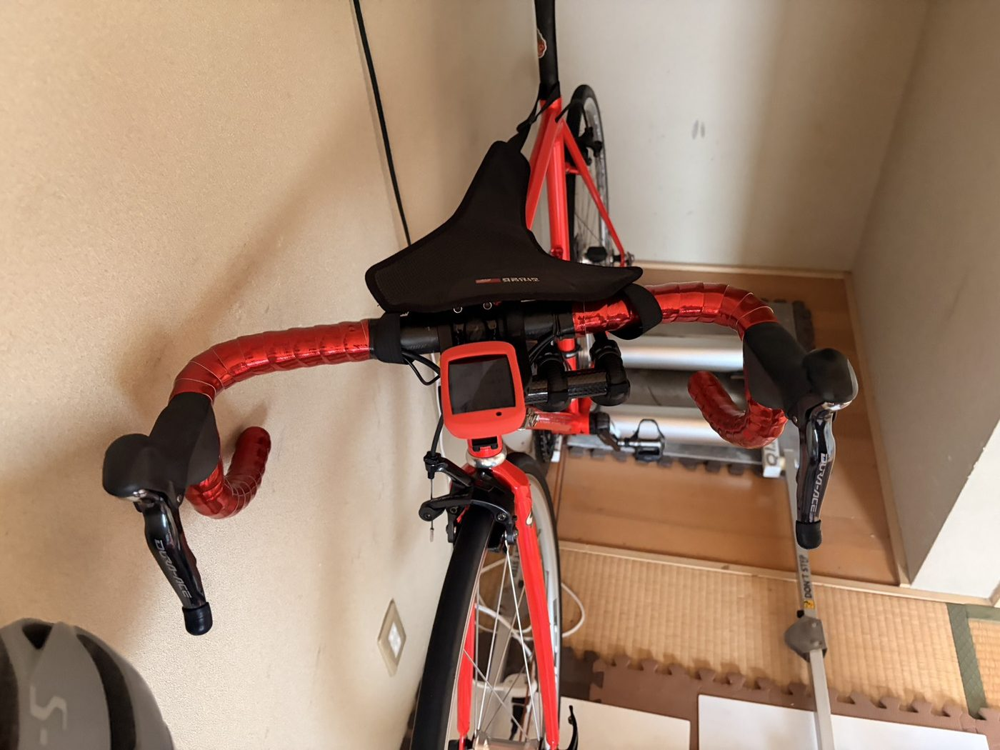
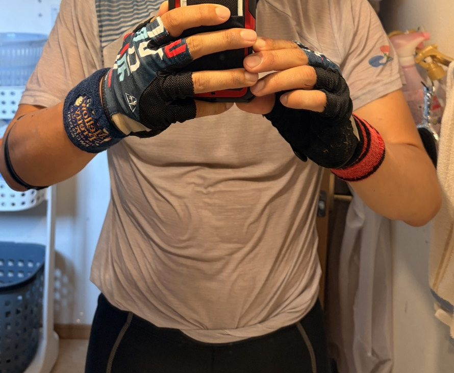
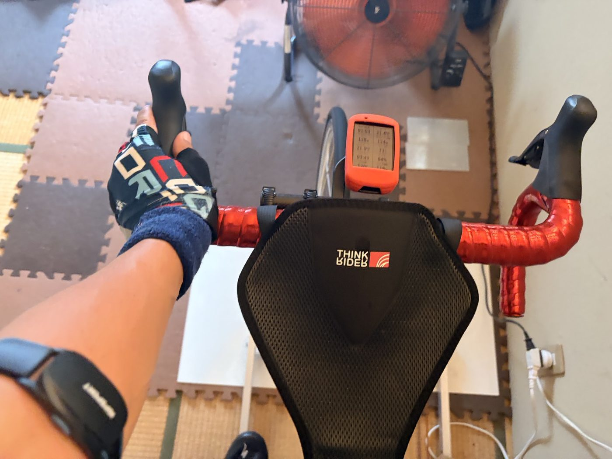

ゴルビー翌日にSST20分×2。
2本目後半でゾーンに入った日
昨日は、Garminに「無酸素運動不足」と言われたので、330W以上を意識した無酸素寄せゴルビーをやった。TSS123.2、IF0.922。普通に考えれば、翌日は脚に来てもおかしくない。
それでも今日は天気が微妙だったので外ではなくローラーへ。狙いは、ゴルビー翌日に疲労下でSSTを積めるか。結果としてSST20分×2を完遂し、最後に高出力刺激まで入れられた。練習としてはかなり良かった。ただし、最後にローラーで落車した。情報量が多い。

ゴルビー翌日にローラーへ
前日の無酸素寄せゴルビーは、5分走が340W、341W、328W、318W、319W。平均で329ｗ、現在75kgなので4.38倍とかなり強い内容だった。普通なら今日は軽めにしてもいい日である。というか、軽めにした方が人間としては自然かもしれない。
ただ、富士ヒルゴールドを目指すなら1日だけ頑張って終わりでは足りない。もちろん毎日追い込むつもりはないが、疲労がある状態でSSTをどこまで積めるかは見ておきたい。今日はそこを試す日になった。
今日のメニューはSST20分×2
最初はSST20分＋SST15分くらいで考えていた。昨日の負荷を考えると、それでも十分だと思っていた。でも実際には2本目も20分まで伸ばせた。
- SST 1本目20分 / 平均251W / NP251W
- SST 2本目20分 / 平均244W / NP244W
- FTP設定275W
FTP275W基準だと、だいたい89〜91%くらい。まさにSSTど真ん中。ゴルビー翌日にこれができたのは、かなり良かったと思う。

2本目後半でゾーンに入った
今日いちばん大事だったのは、2本目の後半だった。2本目は14分くらいまでかなりきつかった。脚も心肺も完全に余裕がある感じではない。昨日のゴルビーの疲労もある。これは15分で終わってもいいかな、という気持ちも少しあった。
でも15分を超えたあたりから、急に感覚が変わった。苦しさが少し和らいだ。なんというか、ゾーンに入ったような感じだった。それまで意識して耐えていたのに、急にリズムが合ってきた。
脚の回し方、呼吸、上半身の力の抜け方、ケイデンス。そのあたりがふっと噛み合った。さらに19分を過ぎたあたりからは、かなり楽になった。もちろん完全に楽なわけではない。でも、さっきまでの「きつい、早く終わりたい」という感じではなくなった。
これは、富士ヒル向けにはかなり良い感覚だと思う。ヒルクライムは短時間だけ強い出力を出す競技ではない。長く、一定以上の強度で、淡々と踏み続ける必要がある。その中で、苦しい時間をただ我慢するのではなく、自分の踏み方を見つけてリズムに入れるかどうか。今日はその練習になった気がする。
最後の高出力刺激も予定より伸びた
SSTの後は、30秒の高出力刺激を3本入れる予定だった。ただ、実際には少し伸びた。
- 1本目41秒 / 平均388W / 最大498W
- 2本目41秒 / 平均370W / 最大408W
- 3本目1分 / 平均376W / 最大463W
最初は30秒で終わる予定だったが、1本目と2本目は40秒まで引っ張った。3本目は1分までいけた。この時もきつかったが、前より体に無駄な力が入っていない感じで踏めていた。
昨日の無酸素寄せゴルビーでも感じたが、高出力に対する耐性が少しついてきているのかもしれない。もちろん、まだ断定はしない。すぐ調子に乗ると、だいたい翌日どこかが文句を言う。
汗がすごかった
余談だけど、今日は汗の量がすごかった。ローラー後のシャツとレーパンが、泳いできたくらいに濡れていた。Garminの推定発汗量は1,127ml。ただ、室内ローラーの体感としては、もっと出ているようにも感じる。
扇風機は回している。業務用のでっかいやつ。クーラーは冷えすぎる感じがあまり好きではないので、しばらくはこのまま練習するつもり。ただ、この汗の量はなかなかすごい。水分はもちろん、汗が多い日は塩分も少し意識した方がよさそうだ。
ローラーは外より安全に見えるけれど、暑さと発汗の負荷はかなり大きい。安全そうな顔をして、普通に体力を削ってくる。

クールダウン中にローラー落車
もうひとつ余談。最後のクールダウン中に、スマホを取ろうとしたら落車した。体は無事。ただ、ハンドルが派手に曲がった。
疲れでフラフラしていたというより、たまたまバランスを崩して、タイヤがロックしたような感じだった。ローラーで落車。そんな日もある。いや、あまりあってほしくはない。
とはいえ体が無事だったのは本当に良かった。次に乗る前に、ハンドル、ステム、ブレーキレバー、ヘッド周りはちゃんと確認する。ローラー中とはいえ、ハンドル周りがズレたまま外を走るのは怖い。

今回やってみて思ったこと
今日はかなり良い練習だった。昨日の無酸素寄せゴルビーでTSS123.2。その翌日にSST20分×2をやって、さらに最後に高出力刺激。今日のTSSは95.5。2日連続でかなり積んでいる。
特に良かったのは、2本目の後半。14分まではめちゃくちゃきつかったのに、15分を超えたら苦しさが和らいだ。19分からはかなり楽になった。これは、ただ根性で耐えたというより、途中から体がリズムに入った感じだった。
高出力刺激も予定より長く踏めた。しかも、無駄な力が入りすぎずに踏めた。昨日のゴルビーと合わせて、高出力への耐性も少し上がっている気がする。
もちろん油断はしない。今日の負荷は普通に高い。汗もかなり出た。最後にはローラーで落車までした。練習としては成功。安全面では反省。そんな日だった。
次に見るポイント
明日はまず脚の状態を見る。今日のSST20分×2は、見た目以上に効いているはず。昨日と今日でかなり負荷が入っているので、無理に高強度を重ねるより、脚、心拍、お尻、疲労感を確認したい。
あとは水分。この汗の量なら、練習後の水分補給はかなり大事。今日の結論としては、ゴルビー翌日のSST20分×2は成功。2本目後半でゾーンに入れた。高出力刺激も予定以上。でも、ローラー中のスマホ操作は危ない。
AIと喧嘩しながら富士ヒルゴールドを目指す前に、まずローラーで落車しないようにしたい。
自分用メモ
- メニューSST20分×2＋高出力刺激3本
- SST1本目251W / 2本目244W
- 高出力388W・370W・376W
- 全体負荷NP230W / IF0.835 / TSS95.5
- 心拍平均139bpm / 最大163bpm
- 発汗Garmin推定1,127ml
- 確認ハンドル・ステム・ブレーキレバー・ヘッド周りを次回前に確認